1.Testing recognition with cropped class images
--compute 10 eigenfaces.
average_face
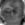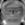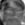
eigenface 1-10
--recognize the photos in the interesting images folder
| number of eigenface |
1 |
3 |
5 |
7 |
9 |
11 |
13 |
15 |
17 |
19 |
21 |
| number of face recognized |
7 |
12 |
15 |
15 |
15 |
17 |
18 |
19 |
18 |
16 |
16 |
plot above table as below:
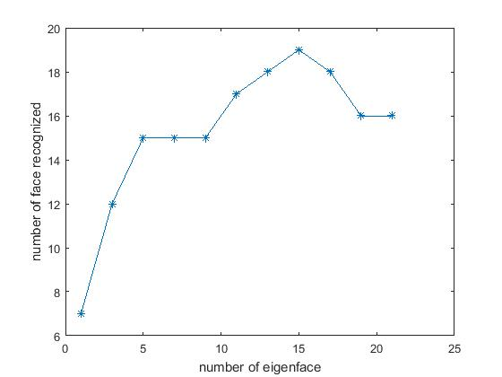
It can be seem from the plot that recognize (correctly) rate rises with number of eigenfaces used to decompose and reconstruct faces first and declines next. It is not always best to use as many eigenfaces as possible since in a small dataset, higher order parameters of eigenface becomes very small and sensitive to noise. It is hard to say how many eigenfaces leads to best performance, but it is probably a practical way to use aroud 20 eigenfaces and do a few of experiments. However, the trade-off for big dataset between number of eigenfaces used and time for computing eigenfaces also exists and we need to evaluate the precision versus efficiency.
One of the wrong matches (using 15 eigenfaces) is that face interesting/02.tga recognized as being closest to face neutral/13.tga with MSE 69750.4.
interesting/02.tga
neutral/13.tga
This MSE is very big compared to correct matches with a commom MSE being under 20000 which is reasonable because face interesting/02 has a great face 'distortion' and becomes harder for eigenfaces to describe. The true match neutral/02.tga comes at the 3rd in candidate matche list which is still an acceptble error range.
list of candidate matches
0: faces/neutral/13; MSE: 69750.4
1: faces/neutral/05; MSE: 76468.5
2: faces/neutral/02; MSE: 111633
3: faces/neutral/08; MSE: 125329
4: faces/neutral/07; MSE: 159894
5: faces/neutral/06; MSE: 161319
6: faces/neutral/01; MSE: 183107
7: faces/neutral/16; MSE: 210969
8: faces/neutral/24; MSE: 213548
9: faces/neutral/03; MSE: 221796
1: faces/neutral/05; MSE: 76468.5
2: faces/neutral/02; MSE: 111633
3: faces/neutral/08; MSE: 125329
4: faces/neutral/07; MSE: 159894
5: faces/neutral/06; MSE: 161319
6: faces/neutral/01; MSE: 183107
7: faces/neutral/16; MSE: 210969
8: faces/neutral/24; MSE: 213548
9: faces/neutral/03; MSE: 221796
2.Cropping and finding faces
-- crop the group/test_single.tga imageUsing 15 eigenfaces trained from neutral face, getting below result:
test_single.tga
-- crop my own image
I used a online image (kobe.jpg) while whatever my scale chages, I cannot crop the correct face. The best result I get is where the true face comes at the 2nd place in candidate boxes at scale 0.33, which is as below:
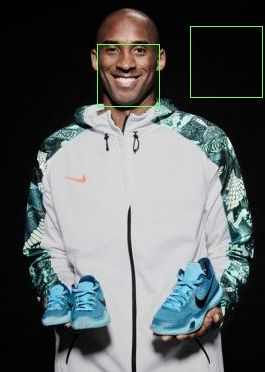
kobe_mark(marks the best 2 boxes)
Then I just take the trick to eliminate margin boxes (rule out if the box covers any left or margin, 1/10 of the image width, pixels) and crop the correct face as below:
kobe_cropped
It is indeed hard to find one best box being the true face using eigenface method because the program is easy to get best at plain background or clothes area. I tried to use magnitude, variance and magnitude/variance to help select the correct box but none of them worked well.
-- mark two group photos of students
Using 15 eigenfaces trained from neutral face, searching scale from 0.35 to 0.55, step 0.05. Selecting best 4 results from candidates boxes which sorted by their reconstruction_error*mean_face_diatance/box_vartiance value.
good results like group/group01.tga and group/group06.tga are as below:
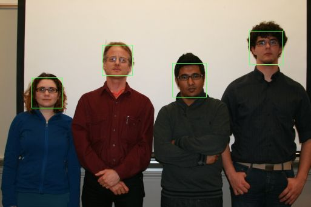
group01.tga
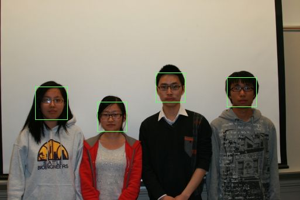
group06.tga
Actually, testing program on the whole group image folder (17 images), only 3 of them missed correct face recognization which are group02.tga , group05.tga , group10.tga. These images all have 'titled heads' (lower, rise or tilt head) which never show in training dataset (neutral faces). Other images have satisfiable results including those 'grimaced faces' without head skew.
Bad results:
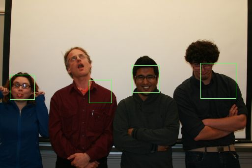
group02.tga
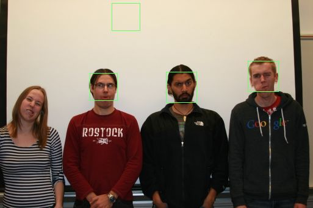
group05.tga
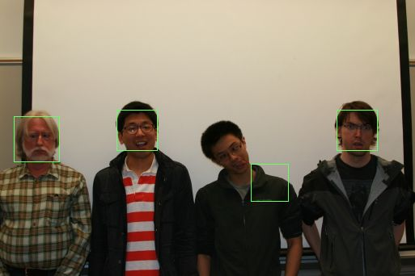
group10.tga
-- try on other group photos
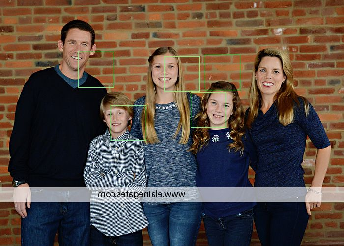
my own group photo does not present very good results in find face task, probably because the faces in my group are not alike the training faces or training dataset is not big enough to capture true faces.
3.Verify Face
--use 15 eigenfaces and userbase files computed in problem 1 to find optimal threshold for verification of interesting faces to neutral faces.I used binary search to find best threshold witch minimizese FP+FN. Start with threshold=60000, experiments as below:
| threshold | 60000 |
50000 |
40000 |
30000 |
20000 |
25000 |
27500 |
| FP+FN |
41 |
22 |
16 |
14 |
19 |
15 |
14 |
Threshold around 27500 to 30000 are approximately the same best thresholds that minimizes false positive+false negative.
With threshold=27500, false positive rate is FP/(FP+TN)=0/552=0 and false negative rate is FN/(TP+FN)=14/(10+14)=41.7%.
false negatives are:
Image 'faces/interesting/02.tga' is not a picture of faces/neutral/02's face.
Image 'faces/interesting/03.tga' is not a picture of faces/neutral/03's face.
Image 'faces/interesting/04.tga' is not a picture of faces/neutral/04's face.
Image 'faces/interesting/05.tga' is not a picture of faces/neutral/05's face.
Image 'faces/interesting/06.tga' is not a picture of faces/neutral/06's face.
Image 'faces/interesting/07.tga' is not a picture of faces/neutral/07's face.
Image 'faces/interesting/09.tga' is not a picture of faces/neutral/09's face.
Image 'faces/interesting/10.tga' is not a picture of faces/neutral/10's face.
Image 'faces/interesting/12.tga' is not a picture of faces/neutral/12's face.
Image 'faces/interesting/13.tga' is not a picture of faces/neutral/13's face.
Image 'faces/interesting/15.tga' is not a picture of faces/neutral/15's face.
Image 'faces/interesting/16.tga' is not a picture of faces/neutral/16's face.
Image 'faces/interesting/19.tga' is not a picture of faces/neutral/19's face.
Image 'faces/interesting/21.tga' is not a picture of faces/neutral/21's face.
Image 'faces/interesting/03.tga' is not a picture of faces/neutral/03's face.
Image 'faces/interesting/04.tga' is not a picture of faces/neutral/04's face.
Image 'faces/interesting/05.tga' is not a picture of faces/neutral/05's face.
Image 'faces/interesting/06.tga' is not a picture of faces/neutral/06's face.
Image 'faces/interesting/07.tga' is not a picture of faces/neutral/07's face.
Image 'faces/interesting/09.tga' is not a picture of faces/neutral/09's face.
Image 'faces/interesting/10.tga' is not a picture of faces/neutral/10's face.
Image 'faces/interesting/12.tga' is not a picture of faces/neutral/12's face.
Image 'faces/interesting/13.tga' is not a picture of faces/neutral/13's face.
Image 'faces/interesting/15.tga' is not a picture of faces/neutral/15's face.
Image 'faces/interesting/16.tga' is not a picture of faces/neutral/16's face.
Image 'faces/interesting/19.tga' is not a picture of faces/neutral/19's face.
Image 'faces/interesting/21.tga' is not a picture of faces/neutral/21's face.
However, we can achieve minimum FP/(FP+TN)+FN/(TP+FN) by searching threshold from 20000 to 60000. I find the minimum FP/(FP+TN)+FN/(TP+FN) = 24.63%, optimal threshold being 52000 with FP is 21, FN is 5, TP is 19, TN is 531.